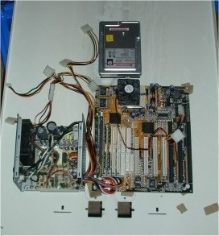
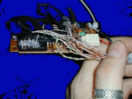
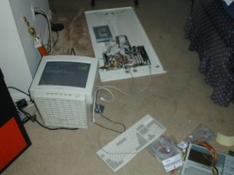

Coke Adds Life, as if I had one ;o)
In the beginning there was the Nothingness. And Dave said "Hey, do we want a Coke Machine?" And there was a Coke Machine. And it was good. Heavy, but good.
Then people started mentioning that at their alma maters they had coke machines that would tell you their contents over the internet. "Heck," I said, as I'm want to do, " I should be able to do that!" And I did. And it was a long and bizarre and uphill journey. But now it's done. In a Sisyphean sorta way.
 Controlled by a Compaq 486 with 8 megs of ram using 124 of it's whopping 502meg hard drive mounted just behind the "CocaCola" coverRunning Win95 and Apache1.3.2.0Running CokeMachine 1.3.0 Software (stuff I wrote in VC)Sound is handled by an old SoundBlaster (8bit?) card and a pair of Compaq speakers |
| Original photo unavailable: CloseupOfExtraSwitches.jpg | Determines when sodas are dispensed by sensors placed on the motor controls, which simulate numeric keypad strokes. I had to drill out the coke machine a little to get it to work, but it works... |
 My first idea was to make my own serial interface to read when the front panel buttons were pressed. This had one drawback: it was complicated and I was in a hurry. So instead, I had JP grab some numeric keypads (from someplace that will remain nameless) that I would quickly desolder, chart, and run wires to so that simple switch closing would look like keyboard presses. |
 While I waited for these to arrive I wrote some simple code that would take in these virtual keypresses and record them as soda decrements and display what I thought it dispensed. I ran a vga extension cable from the motherboard to an external monitor so I could watch the program run. |
The numeric keypads arrived, I plugged everything in, and it seemed to work perfectly on the first try (no shit!) There was one fatal flaw in my plan, tho, that Coworker Hans (who had been following my progress like a proud parent at the special olympics) pointed out. People could just randomly hit buttons while nothing was dispensed either because they hadn't put in money or the soda was empty. My code was quickly showing negative inventory. The word "Oopsy" came to mind a lot.
|
Original photo unavailable: CokeMachinePlusWiringHarnesWithDescription.jpgHans thought it would be a good idea to detect when the motors spun. There were already sensors for this, so adding one more shouldn't be so tough. Sadly I had to drill out some of the coke machine to mount longer retaining screws. Luckily I happened on HappControls to get all the extra switches, etc I needed. It was up and running in a few late nights. (In hindsight, may have been smarter to put relays on the motor power wires. oh well. Next time...) |
So there it was. All working fine. The only problem was running it headless (no monitor, no external keyboard, etc). Luckily Deker had just found VNC, a really cool cross-platform tool for system administration. I could finally let it run on it's own.
Last thing I needed to do to get the webstuff up and running. Getting the PWS working was a bi, er, pain but all's better now. Adding the code to generate the include files was easy.
Since then I've just been adding features as they came to mind. It now plays sale-appropriate jingles when you buy (coke jingles for coke, homer quotes about beer for yeunging, etc).
We now have a LCD display module on the front. It switches between showing the time, current contents, and last six purchases. Will make a page to hilite this, and probably a little javascript thing to mimic this display on the main page or navbar...
I still want to add a few more features. I've got a cam installed on it, in theory it'll soon take pictures of people as they make purchases and display them on the webpages (so you'll see lots of pix of dave in a towel buying his first coke of the morning on his way downstairs after his shower, etc). I want to add graphs to show buying trends. Beyond that, I'm not so sure. As the fancy hits, I guess...
LATEST NEWS:
spent an evening putting MS Access support into the code so I could do
sql-searches
and stuff, but decided that the overhead just wasn't worth it and
disabled.
Figure it's just easier to do my own parsing of my own data file (which
are
tiny and quick to sort thru)
--jason